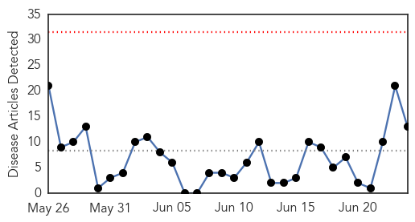
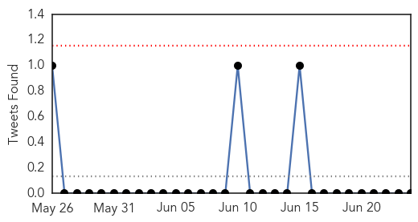

Cholera
30-Day Web Trend
0 alerts, 0 warnings

30-Day Twitter Trend
6 alerts, 0 warnings

Article Locations

Article Confidences
Top Articles:
- 0.999
- Cholera Recoils, Kills 19 In Juba > Gurtong Trust > Editorial
- 0.998
- Cholera outbreak in South Sudan
- 0.997
- Sudan Tribune: Plural news and views on Sudan
- 0.996
- الاخبار المصورة
- 0.993
- At Least 18 People Die of Cholera in South Sudan in Three Weeks
- 0.993
- South Sudan: Cholera prevention
- 0.987
- The most from the coast
- 0.986
- Cholera outbreak brings more pain, sufferings to S. Sudanese - Xinhua
- 0.981
- 24.06.98 Cholera outbreak feared
- 0.941
- AJumani Hit by Cholera Epidemic
- 0.934
- Oxfam deeply concerned about cholera outbreak as crisis worsens in South Sudan - South Sudan
- 0.677
- Health And Family, Lifestyle Features, The Philippine Star
- 0.592
- Children cut-off from nutrition, health services
Top Tweets:
-
No tweets found for Jun 24, 2015
Influenza
30-Day Web Trend
0 alerts, 0 warnings

30-Day Twitter Trend
1 alerts, 0 warnings

Article Locations

Article Confidences

Top Articles:
Top Tweets:
- 0.606
- Beat the flu and have a flu shot now! While influenza cases are on the rise, it is not too late to get vaccinated. http://t.co/aKVzGnRPv0